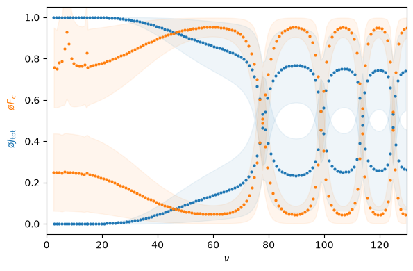

This page was generated from the Jupyter notebook
mqdt_exp_qn.ipynb.
Labeling the angular character of Yb 171
[1]:
import logging
import matplotlib.pyplot as plt
import numpy as np
import rydstate
logging.getLogger("rydstate").setLevel(logging.ERROR)
[2]:
nu = 0, 130
l_r = 0
f_tot = 1 / 2
basis = rydstate.BasisMQDT("Yb171", nu, f_tot=(f_tot, f_tot), include_sqdt_fallback_models=False)
[3]:
print(f"Number of states in basis: {len(basis.states)}")
print("States in basis:")
for state in basis.states[:3]:
print(state)
print("... ")
Number of states in basis: 781
States in basis:
-0.00011904947676346527*(Yb171, RadialKet(nu=1.8192961066009463, potential=PotentialFei2009Ytterbium171(l_r=1)), FJ(i_c=0.5, s_c=0.5, l_c=0, s_r=0.5, l_r=1, j_c=0.5, f_c=1.0, j_r=1.5, f_tot=0.5)), 0.8659476823364968*(Yb171, RadialKet(nu=1.8192961066009463, potential=PotentialFei2009Ytterbium171(l_r=1)), FJ(i_c=0.5, s_c=0.5, l_c=0, s_r=0.5, l_r=1, j_c=0.5, f_c=1.0, j_r=0.5, f_tot=0.5)), -0.5001345791717184*(Yb171, RadialKet(nu=1.8193076771654273, potential=PotentialFei2009Ytterbium171(l_r=1)), FJ(i_c=0.5, s_c=0.5, l_c=0, s_r=0.5, l_r=1, j_c=0.5, f_c=0.0, j_r=0.5, f_tot=0.5))
0.6869979641992596*(Yb171, RadialKet(nu=1.8389122687565478, potential=PotentialFei2009Ytterbium171(l_r=1)), FJ(i_c=0.5, s_c=0.5, l_c=0, s_r=0.5, l_r=1, j_c=0.5, f_c=1.0, j_r=1.5, f_tot=0.5)), 0.3634927778183221*(Yb171, RadialKet(nu=1.8389122687565478, potential=PotentialFei2009Ytterbium171(l_r=1)), FJ(i_c=0.5, s_c=0.5, l_c=0, s_r=0.5, l_r=1, j_c=0.5, f_c=1.0, j_r=0.5, f_tot=0.5)), 0.629211250423888*(Yb171, RadialKet(nu=1.8389242176447407, potential=PotentialFei2009Ytterbium171(l_r=1)), FJ(i_c=0.5, s_c=0.5, l_c=0, s_r=0.5, l_r=1, j_c=0.5, f_c=0.0, j_r=0.5, f_tot=0.5))
1.0*(Yb171, RadialKet(nu=2.056276554138905, potential=PotentialFei2009Ytterbium171(l_r=2)), FJ(i_c=0.5, s_c=0.5, l_c=0, s_r=0.5, l_r=2, j_c=0.5, f_c=1.0, j_r=1.5, f_tot=0.5))
...
[ ]:
basis.filter_states("j_tot", (0, float("inf")))
basis.filter_states("f_c", (0, float("inf")))
basis.filter_states("f_tot", f_tot)
basis.filter_states("l_r", l_r, delta=0.5)
basis.filter_states("l_c", 0, delta=0.3)
basis.sort_states("nu")
print(f"{basis.species} basis states: {len(basis)}")
print(f" nu_min = {basis.states[0].nu}, nu_max = {basis.states[-1].nu}")
Yb171 basis states: 262
nu_min = 2.501251480202191, nu_max = 129.68494203492332
[5]:
fig, ax = plt.subplots(figsize=(6, 4))
qns_of_interest = ["j_tot", "f_c"]
legend_labels = {
"f_tot": r"F_{\mathrm{tot}}",
"s_tot": r"S_{\mathrm{tot}}",
"l_tot": r"L_{\mathrm{tot}}",
"j_tot": r"J_{\mathrm{tot}}",
"j_r": r"j_{r}",
"f_c": r"F_{c}",
"i_c": r"I",
}
nu = basis.calc_exp_qn("nu")
for j, qn in enumerate(qns_of_interest):
exp = basis.calc_exp_qn(qn)
std = basis.calc_std_qn(qn) ** 2
mean = np.mean(exp)
for which in ["lower", "upper"]:
idx = np.argwhere(exp < mean) if which == "lower" else np.argwhere(exp >= mean)
exp_i = exp[idx].flatten()
std_i = std[idx].flatten()
nu_i = nu[idx].flatten()
ax.plot(nu_i, exp_i, f"C{j}o", ms=2)
ax.fill_between(nu_i, exp_i - std_i, exp_i + std_i, color=f"C{j}", alpha=0.07)
# labels
ax.set_xlabel(r"$\nu$")
ax.set_ylabel("")
for j, qn in enumerate(qns_of_interest):
label = rf"$\mathrm{{\o}} {legend_labels[qn]}$"
ax.text(-0.11, 0.5 + (2 * j - 1) * 0.08, label, transform=ax.transAxes, rotation=90, va="center", color=f"C{j}")
# lims
ax.set_xlim(0, nu[-1])
ax.set_ylim(-0.05, 1.05)
fig.tight_layout()
plt.show()
